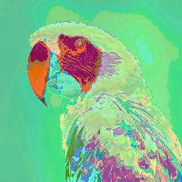

Encryption
Summary
Encryption protects the content of a message on a path that anyone can watch. Light is such a path: whoever puts a sensor next to yours gets the same readings as your partner, and there is no envelope for light. So the words themselves have to be unreadable to everyone but the one you meant. The tool is a key, a secret known to two devices and nobody else, combined with every bit before sending and combined again after receiving. The method may be public; every serious method is. Only the key must stay secret, it must be long enough that guessing is hopeless, and it has to reach your partner by a path nobody watches. And a key does exactly one thing: it stops others from reading. It does not stop bits from changing on the way, and it does not hide that a message is being sent.
In this chapter, we address the following questions:
- How does a message stay confidential when anyone can receive it?
- What is a key, and how do you compute with it?
- Why is it not enough to keep the method secret?
- How long does a key have to be, and what happens when it is too short?
- How do both sides know the key without sending it over the link?
- What does encryption not do, and what belongs next to it?
You need this concept for the extra part of Challenge 4: encrypt your payload, then ask another team to try reading it.
Explanation
Everyone on the way reads a postcard: the postman, the sorter, the neighbour who takes it out of the box. Nobody has to break anything open. Your light is a postcard. Whoever puts a sensor next to your receiver sees exactly what your receiver sees, symbol for symbol, and you would not even notice. A tube around the LED helps against stray light, not against a sensor at the mouth of the tube. A colour alphabet of your own does not help, because whoever measures along for a while counts your colours and tries the few possible mappings. Sending faster does not help, because the sensor next door is the same as yours, and it records now and reads at leisure. Everything that comes out of the light, the listener has too.
So the question is not how to keep the message from them. It is how to write a postcard that everyone can read and nobody can understand.
{kind=link}
Encryption as a box, twice
{kind=link}
Start once more with the model from Input, Processing, Output. Like compression, encryption is two boxes: the message goes into encrypt() and something comes out that looks like noise; the noise goes into decrypt() and the message comes out again. The difference is a second input. pack() needs nothing but the file. encrypt() needs the file and a secret, the key, and decrypt() needs the same key. What comes out of the first box, anyone may see. What went in, only those with the key can recover. Everything on this page is about that second input: how to compute with it, how long it has to be, how two devices come to share it, and what it cannot do.
One gate, one key
You have met the gate already. In Logic and Arithmetic, XOR was the gate that gives 1 when its two inputs differ, and we built a parity bit from it. The same gate encrypts, and the whole method fits in one sentence: where the key has a 1, the bit flips; where the key has a 0, the bit stays.
{kind=link}
Take the byte 0110 1101, which is the letter m, and the key byte 1010 1010. Position by position: 0 against 1, different, so 1. Then 1 against 0, so 1. Then 1 against 1, the same, so 0. And so on:
{kind=link}
The key 1010 1010 flips every second position. The m becomes a byte that matches no letter and looks like any old byte, which is the intention: the listener should see nothing that looks familiar. Note what did not happen. The byte did not get longer; every byte is replaced by one byte, so an encrypted file is exactly as big as the plain one and takes exactly as long to send. And nothing was thrown away, which is the difference from AND: AND would erase every bit where the key has a 0, and nobody could bring it back.
Now the receiver. It does exactly the same thing, XOR with the same key:
{kind=link}
The positions the key flipped, it flips back; the others it never touched. No inverted key, no subtracting, no reverse operation, because XOR is its own reverse. Encrypting and decrypting are the same operation with the same key, and that makes XOR the simplest cipher there is, and, used right, one of the strongest.
{kind=link}
That is what it looks like in the file. The message is twelve bytes, the key is a word you can remember, written under the message as often as needed, and what goes out is twelve bytes that nobody can read. Whether a key that repeats is a good idea is the question of the next section.
One warning from the workshop before it happens to you: a key of all zeros flips nothing. The program runs, the transmission works, and the neighbouring team reads along. Encryption that does nothing looks from the inside exactly like encryption that does everything. Check it the way you check everything, by looking at the bytes that actually go over the link.
How long is long enough
Your protocol specification says that you encrypt the payload with XOR and a key, and every team reads it. Is your encryption pointless now? No. Knowing the method is not knowing the key. This is the oldest rule of the field, written down by Auguste Kerckhoffs in 1883: security may depend on the key alone, never on the method staying secret. Methods get observed, passed on and rebuilt. Your browser encrypts with methods printed in every textbook and is secure all the same, because the key is different every time and nobody else has it. So the key carries everything, and the next question is how much a key can carry.
{kind=link}
Suppose a team encrypts the photo with a key of one byte, XOR on each of its 196,608 bytes. The result looks like noise. The neighbouring team reads it along and does the obvious thing: it tries all 256 possible keys. A program does that in a fraction of a second. 255 attempts give nonsense, and one gives a file that starts with BM, the header of a bitmap, with the parrot behind it. We checked on our picture: exactly one key out of 256 produces a valid header. Looking like noise is not the same as being noise. A key has to have so many possible values that trying them all is hopeless. How many is that? Every byte of key multiplies the possibilities by 256, and the table shows where that leads at a billion tries a second, the order of one graphics card:
{kind=link}
Two bytes are still instant. Four bytes are four billion keys, four seconds. Eight bytes are eighteen quintillion, 585 years. Sixteen bytes, 128 bits, are more seconds than the universe is old, by many orders of magnitude. That is why keys today have 128 or 256 bits: not sixteen times harder than one byte, but out of reach. The billion a second is an order of magnitude, not a measurement; a graphics card manages more against a simple method and less against a good one, and the conclusion does not change.
The same arithmetic applies to something you use every day. A password is a key, and the question is the same: how many possibilities are there?
{kind=link}
Eight lowercase letters are 26 to the power of 8, about 200 billion, three and a half minutes at a billion a second. Eight characters from the full set of 95, upper and lower case, digits and symbols, are 95 to the power of 8: 77 days. Twelve lowercase letters, 26 to the power of 12, take three years; twelve mixed characters seventeen million years. That is why systems ask for symbols, and why length is the stronger lever all the same: four more characters gain more than the whole character set, because the length sits in the exponent and the character set only in the base. And then the red line. Attackers do not start at aaaaaaaa. They start with lists: passwords leaked in earlier breaches, dictionary words, names, years, and the usual substitutions of a for @ and o for 0. A word from a list falls in under a second, however long it is. Password123, summer2026, the cat’s name. On haveibeenpwned.com you can check whether your own already sit in such a list.
A longer key, then. Three bytes have sixteen million values; a program tries those in a fraction of a second too. But you do not even need to try. Look at what the neighbouring team sees when it simply displays the bytes it read as a picture:



The colours are wrong, and the parrot is there all the same: outline, beak, plumage. Encrypted is not the same as unrecognisable. The reason is in the bytes.
{kind=link}
The background is black, nothing but zero bytes, and zero XOR key gives the key: every background point becomes the same colour. Where the picture has structure, the result has structure, because a repeated key treats equal bytes equally. A key of eight or a hundred bytes changes nothing about that as long as it repeats. Every serious method therefore makes sure that equal inputs give different outputs, for instance by letting every byte depend on the one before; that is material for later. The lesson for now: an encrypted picture can still give something away.
The third picture is the other extreme. Take a random key exactly as long as the photo and use it only this once. Now every sent byte is random on its own, every possible message of the same length fits the sent bytes equally well, and no statistics can tell them apart. That is the one-time pad, and Claude Shannon proved in 1949 that it cannot be broken, with all the computing in the world. Where is the catch? The key. It has to reach your partner, secretly, and it is as big as the message itself. Whoever has a secret path for 196,608 bytes of key could send the photo that way instead. The perfect key does not solve the problem; it moves it.
Where the key comes from
{kind=link}
So the key must travel, and it must not travel on the link. Not in the clear: the neighbours read it along and decrypt everything after it. Not encrypted either, because that would need a key the partner already knows, which is the same question one level down. A byte XORed with itself is zero, and sending zeros tells the partner nothing. Over the open channel alone there is no way out of this circle.
The key needs a second path, one the listener does not have. In the course that path is easy: you sit at the same table, and a slip of paper does it. That is not a trick on the side; it is the real difficulty of the field. Between two computers that have never met, your browser and an online shop, say, there is no table and no slip of paper. The idea that solves it is one of the most beautiful in computing.
{kind=link}
Here is how it goes, in three steps. First, the shop sends an open padlock over the line. Anyone can snap it shut, but only the shop’s key opens it, and that key never leaves the shop. The neighbours see an open padlock and can do nothing with it. Second, your browser rolls a fresh secret, puts it inside, snaps the lock shut and sends it back. On the way nobody can open it; not even the browser could open it again. Third, the shop opens it with its key and reads the secret. Now both know it, and from here on they encrypt with it just as you do with your slip of paper. The line saw an open lock and a closed one, but never the key and never the secret. How such a lock is built out of mathematics is material for later semesters (Diffie and Hellman, 1976); the idea is enough here.
What a key does not do
A key keeps others from reading. It does nothing else, and three things belong next to it.
{kind=link}
First, it does not keep bits from changing. On the way a disturbance flips a few bits, or the neighbouring team flips them on purpose. The receiver decrypts, gets wrong bits at exactly those positions and notices nothing, because XOR turns every received bit, a flipped one included, into some bit; nothing about it says “something is wrong here”. Confidentiality and integrity are two different jobs. The key does one, the checksum from Errors and Redundancy does the other, and you need both.
{kind=link}
Second, it applies to the content, not to the frame around it. Under the class standard from Protocols a frame is preamble, type, length, payload, checksum, end marker. What gets encrypted is the payload, and only the payload. The receiver has to recognise the preamble before it can decrypt anything, so the preamble stays a known pattern. It has to know the length before the payload is complete, so the length stays readable. The checksum belongs to the frame’s layer: it is computed over the bytes actually sent, the encrypted ones, and sent openly. A listener learns that a frame is coming and how long it is, which the sending time would tell them anyway. This is layering once more: encryption is a layer above the frame, and each layer does its own job.
{kind=link}
Third, order matters when you also compress. Pack first, then lock. A packer lives on redundancy, on repetitions and uneven frequencies, and good encryption removes exactly those: afterwards every byte is as likely as every other, and the packer finds nothing. We measured it on the raw parrot with a one-time key, and the picture above has the numbers. The wrong order does not save 64 kilobytes; it adds 168 bytes of table. The receiver does it backwards: decrypt first, then unpack.
Hide it in the parrot
One more idea, often confused with encryption. Here is the parrot twice:
The picture on the right carries twelve pages of text, and you cannot see the difference. In every colour value the lowest bit is almost worthless: it changes the colour by one part in 256, which no eye can see. That is where the text sits, bit by bit. Of the 196,608 colour values, 98,556 changed by exactly one. The capacity is the arithmetic from Analog and Digital: 256 by 256 points, three values each, 196,608 values, one bit in each, divided by eight bits per character, 24,576 characters, in a picture that stays exactly as big and looks exactly the same.
But now show only that lowest bit, white for 1:


The original’s lowest bits look like noise with traces of the picture. With the text inside, stripes appear: ASCII letters all start with a 0 and resemble each other, and the pattern gives itself away at once. Whoever knows where to look reads the message in a blink, without any secret. This is steganography: not making the content unreadable, but concealing that it exists. The two ideas are opposites. Encryption hides nothing; everyone sees that a message is going, and it even looks suspicious, like noise. Steganography encrypts nothing; the text is in the picture in plain form, only where nobody looks. You can have both, in this order: encrypt first, then hide. Then whoever searches finds only noise in the lowest bit, and noise was there before.
Slides
The slides for this concept, right here. They are the third deck of session 13, after Throughput and Limits and Compression, and they belong to the extra part of Challenge 4.
Practice questions
Try questions in the exam format here, with the answer and its reasoning shown right away.
Further reading
- Simon Singh: The Code Book. The Science of Secrecy from Ancient Egypt to Quantum Cryptography. Fourth Estate, 1999. The history of the field as a story, from Caesar to public keys, without a single formula you need to follow. The chapter on the one-time pad and the chapter on Diffie and Hellman are this page at book length.
- Auguste Kerckhoffs: La cryptographie militaire. Journal des sciences militaires 9, 1883. https://www.petitcolas.net/kerckhoffs/. The six rules, the second of which is the one on this page: the system must not require secrecy, and it must be able to fall into the enemy’s hands without harm.
- Claude E. Shannon: Communication Theory of Secrecy Systems. Bell System Technical Journal 28 (4), 1949. https://doi.org/10.1002/j.1538-7305.1949.tb00928.x. The proof that the one-time pad is unbreakable, by the same author as the information measure from Symbols and Information. Hard; read the first pages for the setting.
- Whitfield Diffie and Martin E. Hellman: New Directions in Cryptography. IEEE Transactions on Information Theory 22 (6), 1976. https://doi.org/10.1109/TIT.1976.1055638. The paper that invented the open padlock. The introduction is readable by anyone; the mathematics comes later.